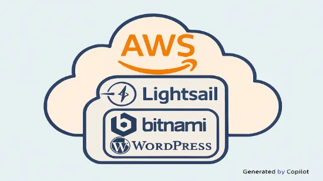

AWS Lightsail 환경에서 WordPress 구축

1. 워드프레스 구축
1.1. Lightsail - Service Selection
- Create an instance
- Instance location: Seoul
- Select a platform: Linux
- Select a blueprint: Apps+OS WordPress
- Choose your instance plan: $3.5
- Identify your instance: Lightsail-Warehouse
1.2. Lightsail - Find initial password
- Connect using SSH in created Instance
cat ~/bitnami_application_password
1.3. Browser - Access WordPress
- To connect https://publicIPAddress/wp-admin and confirm login screen
1.4. Lightsail - DNS zone & Static IP
- Domains & DNS: Create DNS zone
- Domain source: Use a domain from another registrar
- Domain name: public.re.kr
- Select a Region: Seoul
- Attach to an instance: Select created Instance
- Identify your static IP: Lightsail-Warehouse-IP
1.5. Domain Hosting company - Name servers setting
-
Domains & DNS: select created DNS zone
ns-574.awsdns-07.net ns-337.awsdns-42.com ns-1217.awsdns-24.org ns-1573.awsdns-04.co.uk
1.6. Lightsail - Add DNS record
- Domains & DNS: select created DNS zone
DNS records Record name Resolves Add A record @ static IP Add CNAME record www redirecting domain
2. 비트나미 툴을 이용한 SSL 인증 설정
- 생성된 인스턴스에 콘솔 실행
===========================================
bitnami@ip-172-26-15-22:~$ sudo /opt/bitnami/bncert-tool
---------------------------------------------------------------------
Welcome to the Bitnami HTTPS Configuration tool.
---------------------------------------------------------------------
Domains
Please provide a valid space-separated list of domains for which you wish to configure your web server.
Domain list []: public.re.kr www.public.re.kr
---------------------------------------------------------------------
Enable/disable redirections
Please select the redirections you wish to enable or disable on your Bitnami installation.
Enable HTTP to HTTPS redirection [Y/n]: y
Enable non-www to www redirection [Y/n]: y
Enable www to non-www redirection [y/N]: n
---------------------------------------------------------------------
Changes to perform
The following changes will be performed to your Bitnami installation:
1. Stop web server
2. Configure web server to use a free Let's Encrypt certificate for the domains: public.re.kr www.public.re.kr
3. Configure a cron job to automatically renew the certificate each month
4. Configure web server name to: www.public.re.kr
5. Enable HTTP to HTTPS redirection (example: redirect http://public.re.kr to https://public.re.kr)
6. Enable non-www to www redirection (example: redirect public.re.kr to www.public.re.kr)
7. Start web server once all changes have been performed
Do you agree to these changes? [Y/n]: y
---------------------------------------------------------------------
Create a free HTTPS certificate with Let's Encrypt
Please provide a valid e-mail address for which to associate your Let's Encrypt certificate.
Domain list: public.re.kr www.public.re.kr
Server name: www.public.re.kr
E-mail address []: xxxxxx@xxx.xxx
The Let's Encrypt Subscriber Agreement can be found at:
https://letsencrypt.org/documents/LE-SA-v1.3-September-21-2022.pdf
Do you agree to the Let's Encrypt Subscriber Agreement? [Y/n]: y
---------------------------------------------------------------------
Performing changes to your installation
The Bitnami HTTPS Configuration Tool will perform any necessary actions to your Bitnami installation. This may take some time, please be patient.
---------------------------------------------------------------------
Success
The Bitnami HTTPS Configuration Tool succeeded in modifying your installation.
The configuration report is shown below.
Backup files:
--------- Skipped for security. ---------
Find more details in the log file:
/tmp/bncert-202308070556.log
If you find any issues, please check Bitnami Support forums at:
https://github.com/bitnami/vms
Press [Enter] to continue:
bitnami@ip-172-26-15-22:~$
===========================================
3. 총평 및 결어
- AWS의 EC2 인스턴스가 트래픽에 유연하게 대응한다는 장점에도 불구하고, 통계적 비용추계와 갑작스런 트래픽 경고 장치가 부재하면 과다한 비용청구에 대한 리스크가 존재
- 반면 Lightsail은 정액제로 비용 리스크가 없고, 사전 구성된 클라우드 자원을 활용하므로 장기적 교육 투자 부담은 적음.
- 다만 클라우드 아키텍쳐에 대한 학습용으로는 부적합하며, 퍼포먼스가 낮아 소규모의 낮은 트래픽이 요구되는 사이트에 적합